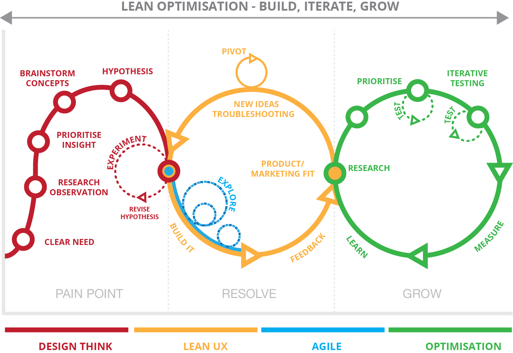

Needs Assessment
A needs assessment is a systematic process for determining and addressing needs, or "gaps" between current conditions and desired conditions or "wants". The discrepancy between the current condition and wanted condition must be measured to appropriately identify the need. The need can be a desire to improve current performance or to correct a deficiency.
Contextual Inquiry
Contextual inquiry is a semi-structured interview method to obtain information about the context of use, where users are first asked a set of standard questions and then bserved and questioned while they work in their own environments.
Heuristic Evaluation
A heuristic evaluation is a usability inspection method for computer software that helps to identify usability problems in the user interface design. It specifically involves evaluators examining the interface and judging its compliance with recognized usability principles.
Usability Testing
Usability testing is a technique used in user-centered interaction design to evaluate a product by testing it on users. This can be seen as an irreplaceable usability practice, since it gives direct input on how real users use the system.
My Skills
Qualitative Research
Quantitative Research
Mixed Methods